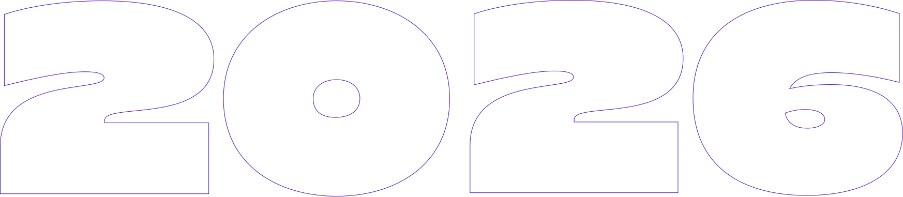
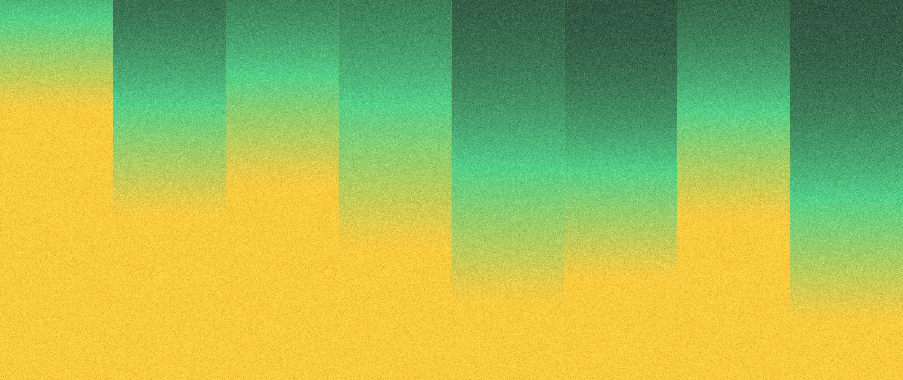
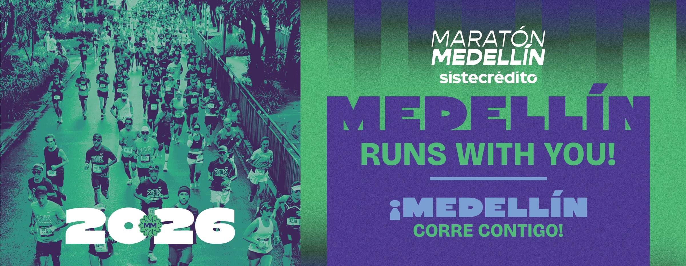
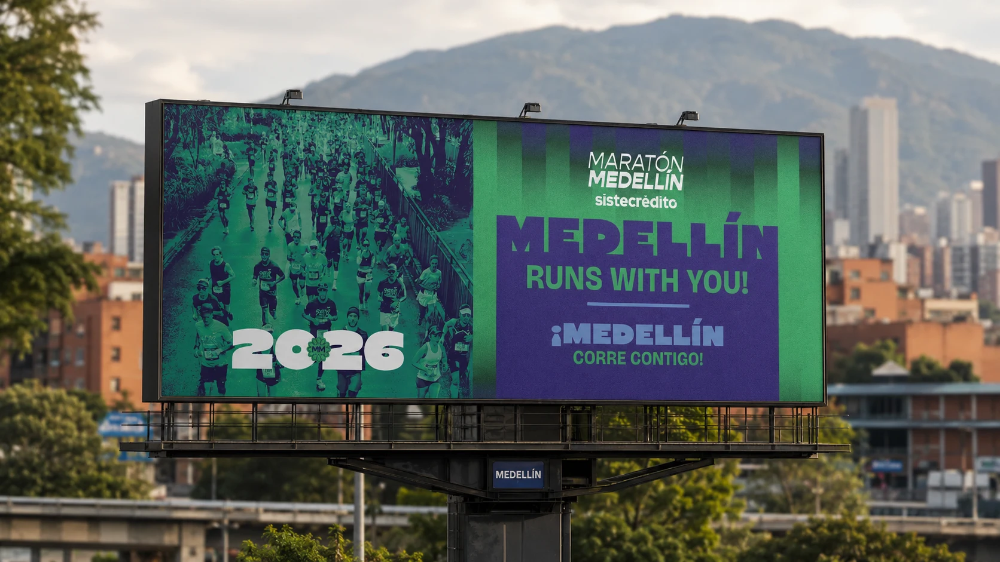

Una carrera con múltiples públicos y escalas.
La identidad debía convivir con corredores, patrocinadores, distancias, formatos digitales, ciudad y experiencia presencial.
Maratón Medellín

Avalada por World Athletics y la Federación Colombiana de AtletismoClasificatoria a Boston
01 · La historia
La identidad debía convivir con corredores, patrocinadores, distancias, formatos digitales, ciudad y experiencia presencial.
El reto no era producir más piezas, sino construir reglas capaces de responder a cada momento sin fragmentar la campaña.
Módulos verticales, tipografía de impacto, una paleta eléctrica y textura continua forman una gramática visual adaptable.
Desde una publicación hasta un dorsal, cada aplicación conserva la misma tensión entre movimiento, información y ciudad.
Desde 1994
La carrera más tradicional de Colombia. Una ciudad que corre al ritmo de sus montañas y flores.
02 · Branding / Key Visual
El Key Visual oficial articula logotipo, barras degradadas, tipografía, distancias y complementos de marca dentro de combinaciones cromáticas de alto contraste.
Diez combinaciones de alto contraste verificadas en el documento oficial de marca. Cada módulo conserva la geometría original del logotipo.
Doce tonos organizados por función. Selecciona un módulo para explorar sus datos técnicos, relaciones y comportamiento dentro del sistema.
Oscuro
Contraste profundo para la familia roja y soporte editorial.
Contraste, ritmo y jerarquía aplicados en una composición editorial compacta.
Bricolage Grotesque construye el lenguaje editorial; Gopher sostiene lectura, interfaz e información; Ziren aporta impacto en numeración, distancias y titulares gráficos de campaña.
Maratón Medellín 2026 — Corre entre montañas
MayúsculasABCDEFGHIJKLMNOPQRSTUVWXYZ
Minúsculasabcdefghijklmnopqrstuvwxyz
EspañolÁÉÍÓÚÜÑ áéíóúüñ
Numerales0123456789
Símbolos.,;:!?¿¡()[]{}+-=/&%#@°*
CombinadaAa Bb Cc 0123 — Medellín 2026
Maratón Medellín 2026 — Corre entre montañas
MayúsculasABCDEFGHIJKLMNOPQRSTUVWXYZ
Minúsculasabcdefghijklmnopqrstuvwxyz
EspañolÁÉÍÓÚÜÑ áéíóúüñ
Numerales0123456789
Símbolos.,;:!?¿¡()[]{}+-=/&%#@°*
CombinadaAa Bb Cc 0123 — Medellín 2026
¡Medellín corre contigo!
Titular verificado en la valla oficial de campaña.
MayúsculasABCDEFGHIJKLMNOPQRSTUVWXYZ
Minúsculasabcdefghijklmnopqrstuvwxyz
EspañolÁÉÍÓÚÜÑ áéíóúüñ
Numerales0123456789
Símbolos.,;:!?¿¡()[]{}+-=/&%#@°*
CombinadaAa Bb Cc 0123 — Medellín 2026
La familia numérica mantiene una lectura inmediata y consistente dentro de una arquitectura común.
La numeración protagonista diferencia la pieza y conserva la arquitectura común del sistema.
La imagen oficial conserva la proporción, el ritmo asimétrico, la continuidad cromática y el granulado propio del sistema.

Mueve el cursor sobre la composición para empujar las barras.
Los anchos y alturas alternados crean un ritmo irregular sin perder unidad.
03 · Recorrido oficial
El trazado oficial de cada distancia, con sus kilómetros, hidratación y altimetría, dibujado con la paleta y el ritmo de barras de la campaña.
04 · La campaña en acción
Explora cómo la identidad cambia de comportamiento antes, durante y alrededor de la carrera.
Visibilidad y expectativa
El sistema sale de la pantalla y ocupa redes, gran formato y puntos de contacto.


05 · Equipo
Dirección creativa de Pablo Molina y ejecución en partes iguales del equipo de MIRAPALTECHO.
Dirección, acompañamiento, procesos y contribuciones creativas.
Ejecución y apoyo creativo en partes iguales: diseño, adaptaciones, aplicaciones y producción de piezas.
Proyecto desarrollado en contexto colaborativo.
Maratón Medellín 2026